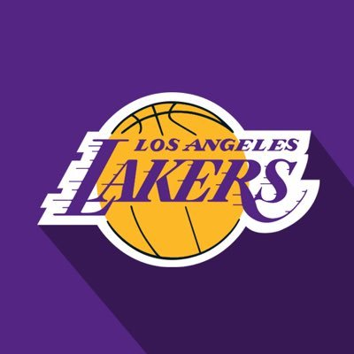

Titulos y premios adquiridos a lo largo de su carrera
- F.C. BARCELONA
- Campeonato de España Júnior (1998)
- Copa del Rey (2001)
- Liga ACB (2001)
- SELECCION ESPAÑOLA
- Medalla de PLATA representando a España en los Juegos Olímpicos de Pekín 2008
- Medalla de PLATA representando a España en los Juegos Olímpicos de Londres 2012
- Medalla de BRONCE representando a España en los Juegos Olímpicos de Río de Janeiro 2016
- Medalla de ORO representando a España en el Mundial de baloncesto de Japón 2006
- NBA
- 2 Anillos de Campeón de la NBA (Campeon con los Los Angeles Lakers
- Seleccionado 5 veces para el partido All-Star NBA
- 2006 - Houston
- 2009 - Phoenix
- 2010 - Dallas
- 2011 - Los Angeles Lakers

- 2015 - New York
Volver a la pagina principal